PCA has reduced the dimensionality of the dataset because the combinations of features are de-correlated.
PCA has not reduced the dimensionality of the dataset because all principal components are retained.
PCA always reduces the dimensionality of the dataset regardless of the number of components retained.
PCA can never be used for dimensionality reduction.
Q2MCQ3 marks
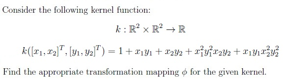
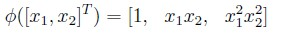
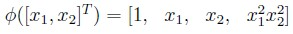
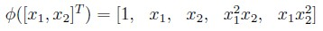
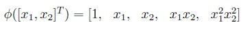
Q3MCQ4 marks
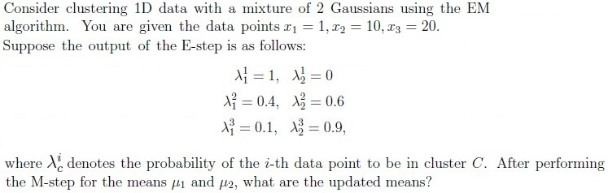
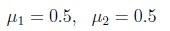
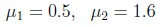
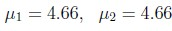
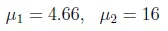
Q4MCQ2 marks
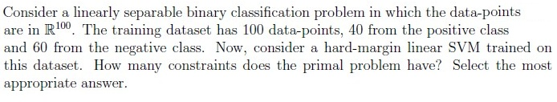
40
60
100
1
Q5MSQ3 marksselect all that apply
Which among the following is TRUE for k-NN algorithm? Select all that apply.
1-nearest neighbour is sensitive to outliers.
k-NN can only be applied to a classification problem.
As k increases, the model is more likely to overfit.
The bias increases with the increase in the value of k.
The variance increases with the increase in the value of k.
Q6MSQ3 marksselect all that apply
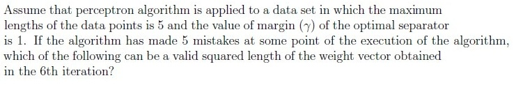
30
120
50
160
Q7MSQ3 marksselect all that apply
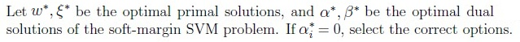
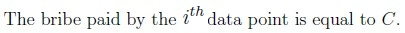
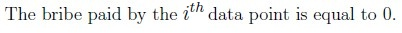
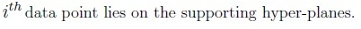
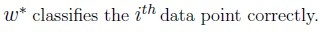
Q8MSQ2 marksselect all that apply
With respect to the Lloyd’s algorithm, choose the correct statements:
The partition configurations cannot repeat themselves.
After doing the reassignments (consider at least one point reassigned to the new cluster), we might get the same means for all clusters.
Objective function after making the re-assignments strictly reduces.
Objective function after making the re-assignments strictly increases.
Q9SA3 marks
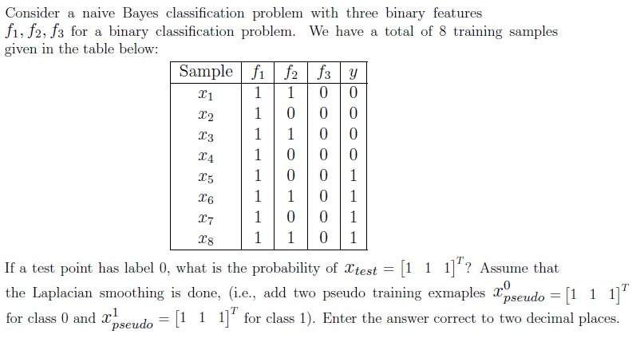
Q10SA4 marks
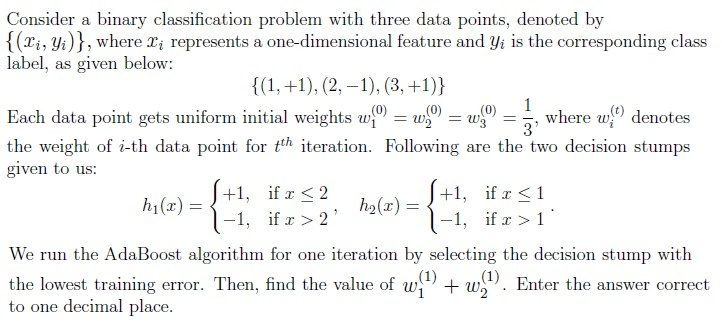
Q11SA4 marks
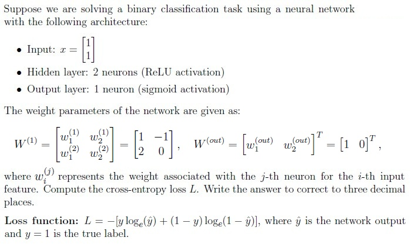
Comprehension passage - the questions below it refer to this
Based on the above data, answer the given subquestions.
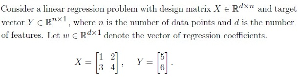
Q12MCQ4 marks
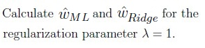
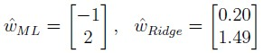
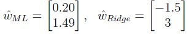
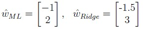
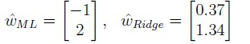
Q13MCQ2 marks
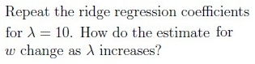
The coefficients shrinks towards zero.
The coefficients increases in magnitude.
The coefficients remain unchanged.
Comprehension passage - the questions below it refer to this
Based on the above data, answer the given subquestions.
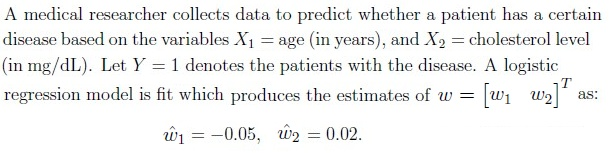
Q14SA3 marks
What is the probability that a 60-year-old patient with a cholesterol level of 200 mg/dL has the disease? Enter the answer correct to two decimal places.
Q15SA3 marks
How high should the cholesterol level be for the patient mentioned in the previous question to have a 50% chance of being diagnosed with the disease?
Comprehension passage - the questions below it refer to this
Consider the datapoints (−2,−2) with label +1 and (2, 2) with label −1. A hard margin SVM is applied on this dataset. Answer the given subquestions:
Q16MCQ2 marks
Which of the following is the decision boundary for the given dataset?